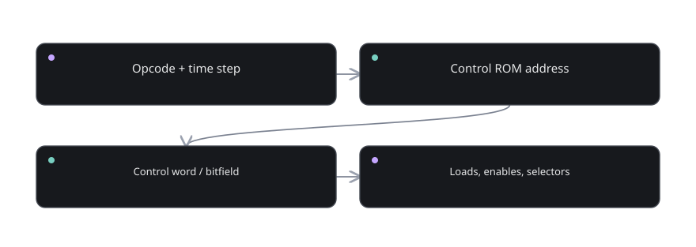

Part 09 of 12
Instructions and control
Define a tiny processor language and make every instruction physically executable.
The story before the details
A general-purpose computer needs commands represented in exactly the same bits that it uses for numbers. This is possible because a pattern has meaning only in context. When fetched into the instruction register, fields of bits are interpreted as an opcode and perhaps operands. When fetched as data, the same pattern might be an integer.
An instruction set architecture is the rulebook specifying what those encodings do. Control circuitry implements that rulebook by producing select, enable, load and write signals. Some simple designs use ROM lookup tables to decide the signals for each opcode and microstep; other designs use hardwired logic. Both can obey the same ISA.
Timing is part of correctness. Signals do not propagate instantaneously. It would be a mistake to capture a RAM result before the address settles or to activate two incompatible bus drivers simultaneously. A clean control timeline makes the machine behave reproducibly, one action after another.

What you will discover
These six lessons are arranged so each one answers a question created by the previous one. Do not rush to the last lesson. If a concept feels opaque, use the checkpoint before continuing.
- 09.01Instruction encoding↗How can a byte command a processor?
- 09.02Instruction set architecture↗What is a contract between code and hardware?
- 09.03Control signals↗How does a decoded opcode operate wires?
- 09.04Microcode ROM↗Can a table orchestrate the CPU?
- 09.05Clock timing and hazards↗Why does operation order matter?
- 09.06Conditional branches and flags↗How does code make an if-statement?
Define a tiny processor language and make every instruction physically executable. You should be able to explain each concept using only an input, a rule, an output, and any state that must be retained.